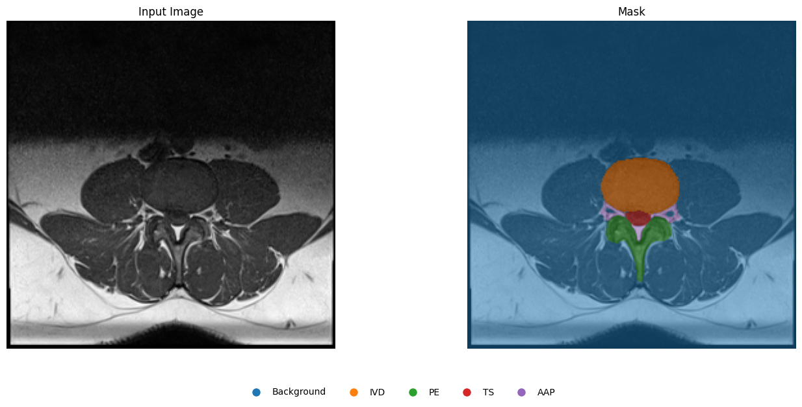
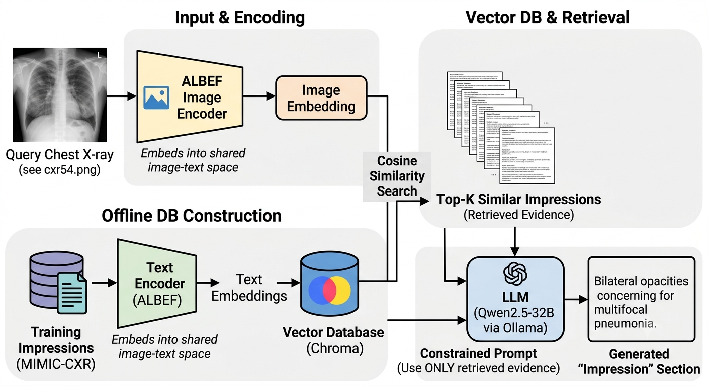
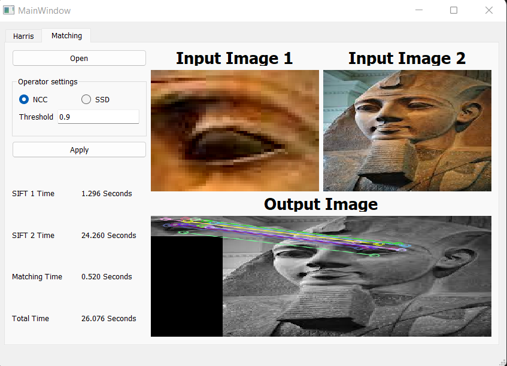
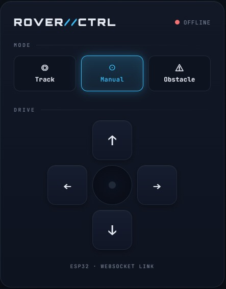
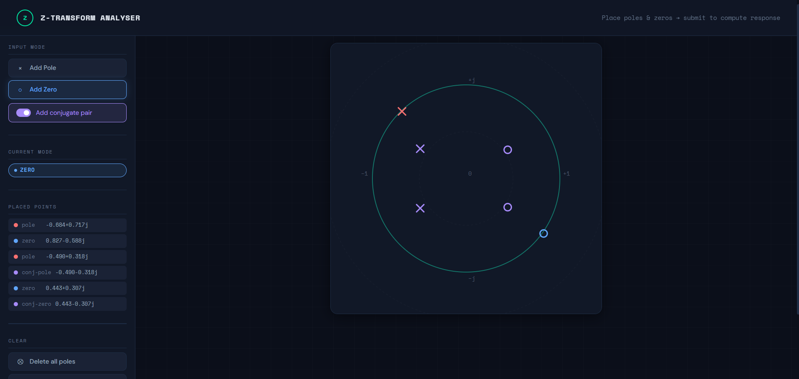
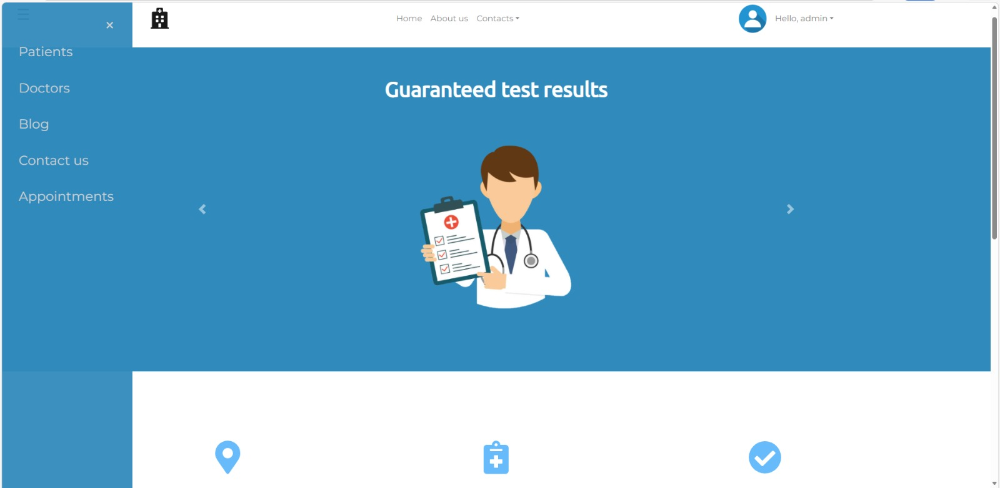
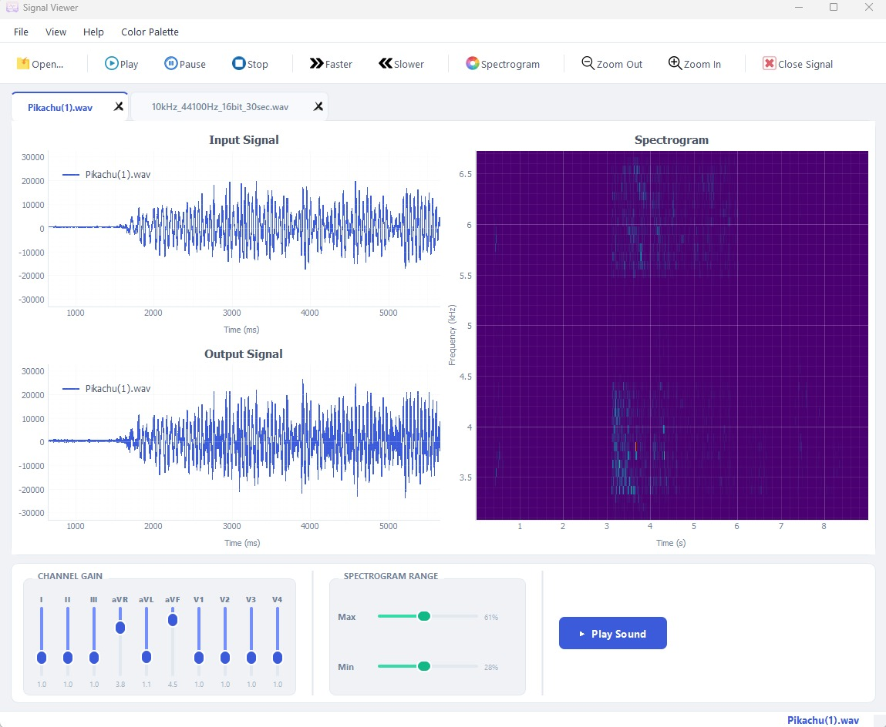
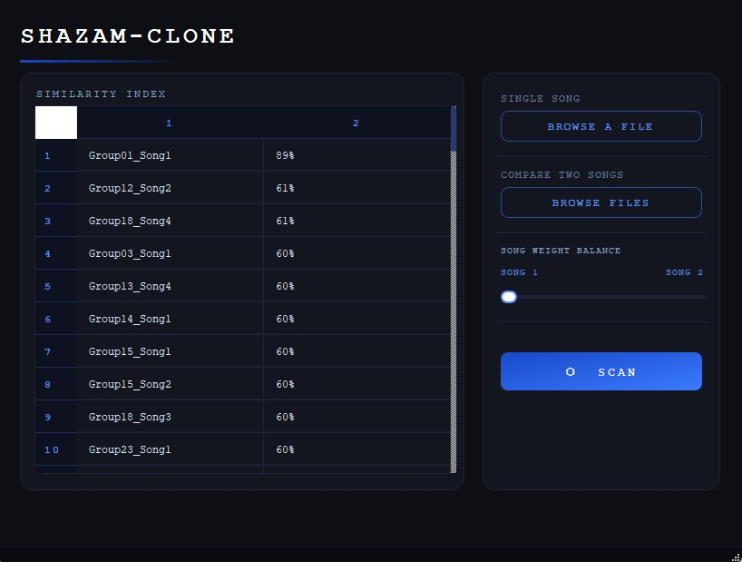
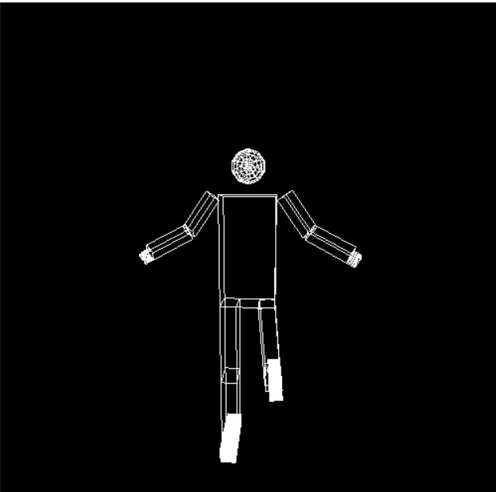
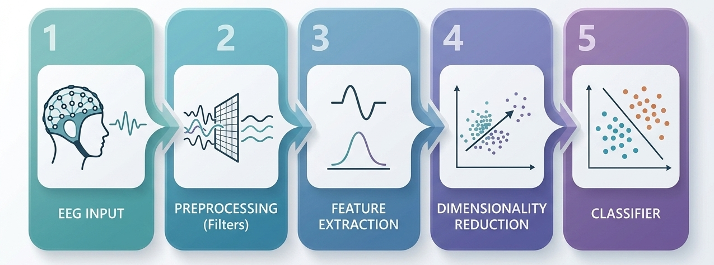

I am an AI engineer (MSc, Western University) specializing in deep learning and medical image analysis, with hands-on experience across the full stack, from model development to embedded and web applications.
I'm an AI engineer and Software developer with a master's in Machine Learning for Health and Biomedical Sciences from Western University and a background in Systems and Biomedical Engineering. My work spans deep learning and medical image analysis, but what I enjoy most is the full arc, taking a model from research into web systems that actually put it to use.
I care about building things that work in real-world settings, under real constraints like noisy data and limited datasets. Coding and AI are what let me turn ideas into real products with real impact, and I love that — along with the constant learning the field demands.
Outside of work, I'm usually gaming, watching movies, or out running. I also love to travel and camp, discovering new places is one of my favorite ways to reset.
London, ON, Canada
Built a multi-stage deep-learning pipeline to detect and grade lumbar spinal stenosis from MRI.
Explored using LLMs to automate unit-test generation for embedded developers, aiming to save developer time.
Investigated the role of DNA-repair-gene mutations in cancer evolution, combining deep learning, population-genetics simulation, and large-scale data engineering.

A U-Net with Squeeze-and-Excitation attention that segments five lumbar spine structures from axial MRI to support diagnosis of lumbar spinal stenosis. Tuned via Weights & Biases hyperparameter sweeps, it reaches a 92.78% test Dice score — outperforming the published benchmark on the dataset.

A multimodal Retrieval-Augmented Generation (RAG) system that generates clinically grounded Chest X-ray Impression sections by retrieving visually similar cases from MIMIC-CXR using an ALBEF image encoder and Chroma vector database. Retrieved reports are passed to a local Qwen2.5-32B model (via Ollama) under evidence-constrained prompting to reduce hallucinations and improve clinical consistency. The pipeline achieves a CheXbert micro-F1 of 0.363, demonstrating improved factual grounding through retrieval-driven generation rather than free-form LLM output.

A computer vision library implementing classical CV algorithms entirely from scratch, without high-level frameworks. It spans edge and feature detection (Canny, Hough, Harris, SIFT), segmentation (K-Means, Mean-Shift, Otsu), and a complete face detection and recognition pipeline. Includes an interactive interface for visualizing and testing each algorithm in real time.

A self-driving car built on Arduino and ESP32, controllable through a Progressive Web App over WiFi. An onboard camera runs OpenCV lane detection that steers the car autonomously via rule-based control, and users can switch between manual and self-driving modes from the app.

An interactive browser-based tool for designing discrete-time digital filters by placing poles and zeros on the Z-plane. Submit your design to instantly visualise the magnitude and phase frequency response, with optional all-pass phase correction.

A full-stack web application for managing a hemodialysis clinic, with role-based access for patients, physicians, and admins. Patients book appointments (synced to Google Calendar via API) and receive their scans and medical reports online; physicians manage appointments, share reports with patients, and collaborate through a built-in blog; admins have full control over users, content, and clinic statistics.

A multi-document desktop DSP application for real-time audio equalization across 10 frequency bands. Users can play audio, view and animate the signal before and after equalization, and explore a customizable spectrogram — with all slider settings saved automatically per file.

An audio fingerprinting app that identifies songs by their spectral signature. It extracts mel-spectrogram and MFCC features, hashes them perceptually, and matches a query against a database using Hamming distance to rank the closest songs. Also supports blending two songs by a weighted average to find what the mix most resembles.

An interactive 3D articulated human figure built with OpenGL and GLUT. Every joint in the body is independently controllable via keyboard, with full 3D camera navigation using mouse drag and arrow keys.

A machine learning pipeline that detects seizure activity in EEG recordings (CHB-MIT dataset). It combines signal preprocessing and frequency/statistical feature extraction with PCA and an SVM classifier to distinguish ictal from preictal states.
Oral presentation at SPIE Medical Imaging and AAPM (Vancouver) · Science Council Innovation in Medical Physics finalist · Manuscript in preparation
Accepted oral presentation at AAPM Annual Meeting (Vancouver) · Manuscript in preparation
I'm currently open to AI & software roles. The fastest way to reach me is email, I usually reply within a day.